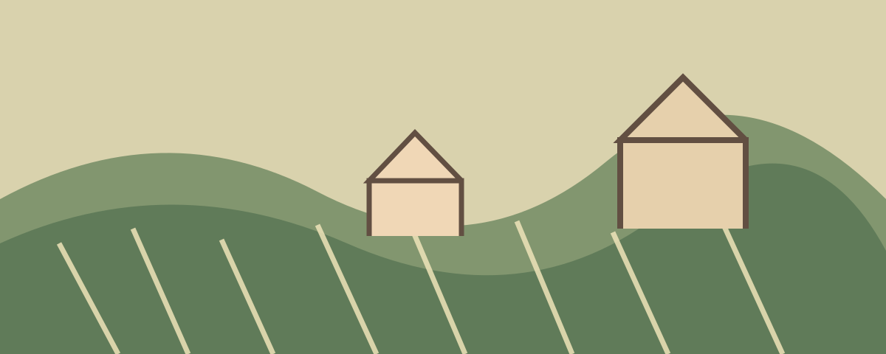
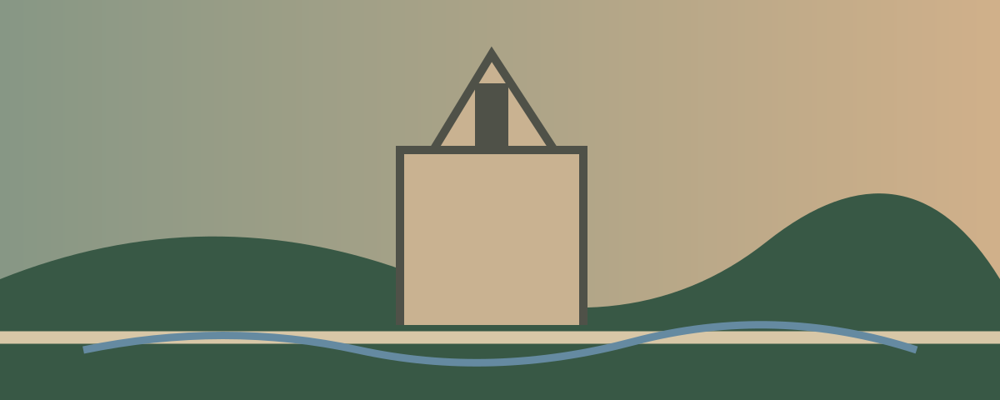

Strasbourg
Strasbourg approach
The city days stay walkable and relaxed; the driver days provide multiple restaurant and picnic choices so lunch never becomes a stressful search.
📍 Strasbourg Essentials — Régent Petite France
Fully vegan café with croissants, pastries, quiche, sandwiches and sweets. Strongest fit for tomorrow morning’s breakfast or a light arrival meal.
Open Maps
Best one-stop room-stock option for bread, crackers, chips, olives, hummus, vegan cheese, chocolate, peanuts, hot sauce, beer and wine.
Open Maps
Use the nearest open pharmacy shown in Maps; opening hours matter more than committing to one fixed shop.
Open Maps
Use the hotel, Cathedral area, Place Kléber department-store facilities, restaurants and Batorama terminal. In-between, open Maps and search “toilettes publiques.”
🍽️ Strasbourg Dining Shortlist
🌱 La Bouture
- Fully vegan café-canteen with two changing lunch dishes, salads and desserts.
- Casual, local and low-pressure—the strongest match for your preferred late-lunch rhythm.
- Best on a Strasbourg city day rather than a driver day.
🌱 Vélicious Burger
- 100% vegan, casual and straightforward.
- Good when hunger wins and you want burgers, fries and a relaxed atmosphere without ceremony.
- Useful in the Krutenau / Bateliers area.
🌱 Origin — Coffee Shop Végétal
- Fully vegan pastries plus sandwiches and quiche.
- Excellent for breakfast pickup, a lighter lunch or a sweet stop.
- The easiest answer when you want food immediately without a long sit-down meal.
🌱 Abyssinia
- Warm Ethiopian setting with a vegan menu and shared-plate potential.
- Casual, flavorful and more communal than formal.
- A good occasional dinner if you stay out later than expected.
🌱 Bistrot & Chocolat
- Vegetarian café with clearly marked vegan options, brunch plates and chocolate-focused desserts.
- Best used as a sweet stop or relaxed lunch rather than a destination dinner.
- Works near the historic center.
🌱 Venezolatino
- Casual arepas and burritos with vegan adaptations.
- Handheld, unfussy and aligned with your preference for ethnic food.
- Good backup when you want something quick and savory.
🇩🇪 Freiburg Late Lunch
🌱 Restaurant Stella Freiburg
- Vegetarian restaurant with a mostly vegan menu and hearty German-style options.
- Casual enough for a driver day, but substantial enough to be the main meal.
- A better fit than stretching the day around a formal restaurant.
🌱 H&S Brothers Meal
- Middle Eastern bowls, hummus, tabbouleh and salads with strong vegan choices.
- Friendly, casual and fast enough to preserve Freiburg wandering time.
- Best backup when you want lunch now.
Small café/bakery with labeled vegan cake options. Use only if it naturally falls near your wandering.
Open Maps
How we eat here
Simple bakery or hotel breakfast, especially before driver days.
Late lunch is the meal worth planning around—particularly in Kaysersberg or Freiburg.
Wine, bread, takeout and canal-side snacks fit better than forcing a second full meal.
Arrival + Petite France
Settle into the Regent Petite France and keep the evening light.
Open route in Google Maps🗺️ Suggested corridor
🍽️ Food near the hotel
On Grand’Rue, naturally between Petite France and the hotel.
- Fully vegan pastries, sandwiches and quiche.
- Best fit for a light arrival meal or tomorrow morning’s breakfast pickup.
- Casual counter service with no formal dining feel.
Use Monoprix at Place Kléber only if you need a fuller room-stock run; otherwise Origin can cover breakfast and a light snack.
Across the historic center; choose only if you are already wandering toward the cathedral/Bateliers side.
- 100% vegan burgers and fries.
- Use when arrival hunger calls for something substantial immediately.
- Still casual enough to take back to the hotel.
🌦️ Flexible options
Historic Strasbourg
See the cathedral and Grande Île without overloading the day.
Open route in Google Maps🗺️ Suggested corridor
🍽️ Late lunch after the cathedral
Use after the Cathedral and Place Gutenberg, before drifting back toward Petite France.
- Fully vegan café-canteen with changing savory plates and desserts.
- Casual and community-oriented—the best match for your main late lunch.
- Fits after the cathedral/Place Gutenberg portion without abandoning the historic core.
Monoprix Place Kléber is the easiest full grocery stop before returning to the Régent.
Toward Grand’Rue and the hotel—ideal if the day is naturally winding down.
- Lighter and faster than La Bouture.
- Good when hunger arrives before you want a long sit-down lunch.
- Strong pastry option for the same stop.
Near the cathedral side of today’s corridor.
- Vegetarian café with clearly marked vegan choices.
- Useful for a sweet stop or lighter meal near the historic center.
🌦️ Flexible options
Alsace Villages — Driver Day
Spend meaningful time in a few villages instead of collecting towns.
Open route in Google Maps
Food decision stays flexible
Choose a restaurant in whichever village naturally holds you at lunchtime, or picnic if the weather is beautiful and the villages are packed.
🗺️ Suggested corridor
🍽️ Restaurants & picnic choices by village
Kaysersberg — preferred lunch anchor
Ribeauvillé
Creative small plates; reserve if this becomes the planned lunch
Exact map pin
Riquewihr
Advance notice required for vegan accommodation; more polished than your default
Exact map pin
Eguisheim
Buy supplies the evening before at Monoprix Place Kléber: baguette, hummus, olives, vegan cheese, fruit, chips, chocolate, water and Alsace wine. Best choices: the shaded Ancient Washing Area in Kaysersberg, the vineyard picnic area on the Route de Riquewihr, or Ribeauvillé City Garden with public restrooms.
🌦️ Flexible options
Black Forest + Freiburg — Driver Day
Experience the forest through the drive, then linger in Freiburg.
Open route in Google Maps
Freiburg is the destination
Use the forest drive for scenery, then protect enough time for Münsterplatz, the Bächle and a relaxed late lunch.
🗺️ Suggested corridor
🍽️ Late lunch in Freiburg
In Freiburg—the main destination, not a Black Forest roadside detour.
- Vegetarian restaurant with a mostly vegan menu and substantial plates.
- Best fit for a real late lunch after the scenic drive.
- Casual enough for travel clothes and unpretentious service.
Central Freiburg backup.
- Middle Eastern bowls, hummus, tabbouleh and salads.
- Friendly and quick, preserving more time for Münsterplatz and the Bächle.
🌦️ Flexible options
Krutenau + Batorama Canal Cruise
Neighborhood Strasbourg first, then a recommended 70-minute canal cruise that gives your feet a break.
Open route in Google Maps🗺️ Suggested corridor
🚤 Batorama Red Tour — recommended
🍽️ Late lunch in Krutenau / Bateliers
Directly in today’s neighborhood.
- Fully vegan, casual and straightforward.
- Already in the Bateliers/Krutenau area, so it preserves neighborhood time.
- Best choice when you want a dependable meal without indecision.
Return through Grand’Rue for Origin pastries or continue to Monoprix if room supplies are low.
South of the center; use only if you are already extending the Krutenau wander.
- Ethiopian food with vegan sharing options.
- Warmer and more leisurely if the atmosphere feels right.
- Better for a lingering meal than a quick stop.
Backup within the broader central/Krutenau zone.
- Arepas and burritos with vegan adaptations.
- Handheld, casual and useful when you want to eat now.
🌦️ Flexible options
Choose Your Strasbourg
Use the final day according to energy, weather and what you loved most.
Open route in Google Maps🗺️ Suggested corridor
🍽️ Repeat the place that earned it
Location depends on the neighborhood you choose to revisit.
- Return to the restaurant that felt warm, easy and worth repeating.
- The website’s saved favorite can become today’s primary recommendation.
- Do not chase a new restaurant merely because it is new.
Central fallback.
- Use whichever you did not try earlier.
- Both are casual, vegan-first and central enough for a flexible day.